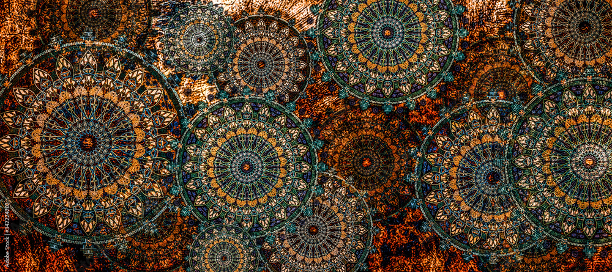

BharatYatra
Home Page
Crafts
GI Tag Products
Calender
UNESCO Sites
Tourist Spots
Hotels & Stays
Transport
Vendors
LOGIN

Indian Crafts
Woven, carved and painted by hands that carry a thousand years of Bharat's heritage
EXPLORE BY STATE & UNION TERRITORY
▾
🤖
BharatYatra Travel Assistant
Your intelligent companion for exploring India
Namaste! 🙏
Ask me about any state's crafts, artifacts or GI-tagged products.
➤